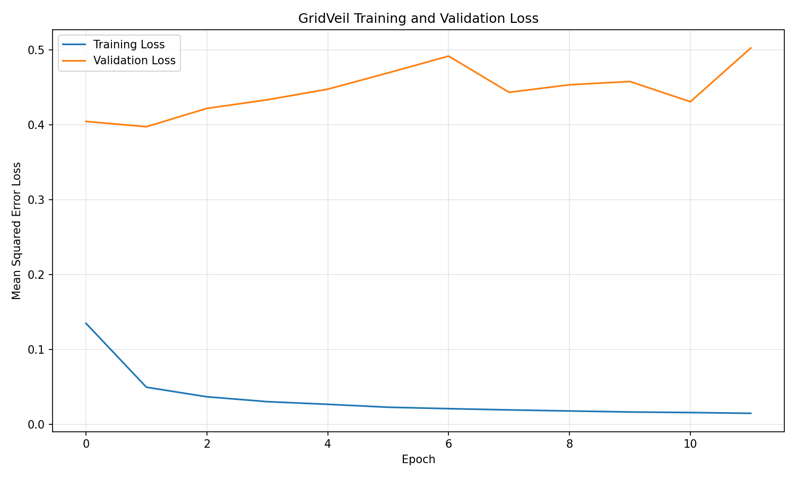

Grid context
Libya's electricity system
Public statistics on generation, mix, and renewables — the real-world context this system is built for. Libya has no publicly available granular (hourly/10-minute) load data, which is why the modeling work runs on a proxy dataset (see Load Forecast).
Electricity generation mix
Share of net electricity generation by source, 2022
System notes
Structural facts relevant to modeling
- GECOL is the sole, fully state-owned utility — generation, transmission, distribution and sales.
- Generation capacity reportedly reached a record 8,200 MW in 2023, against peak demand of 5,000–6,000 MW.
- Distribution efficiency ~71% (2020) — around 29% of distributed electricity is lost, per techno-economic modeling assumptions.
- Renewable target: 7% by 2020, 10% by 2025 (Renewable Energy Strategic Plan, 2013).
Named generation fleet
12 major plants tracked in Libya's energy-system starter data kit, by commissioning year
Renewables getting cheaper
Modeled capital cost, utility-scale solar PV vs. onshore wind, 2015–2050
Forecasting model
Load forecast
A Hybrid CNN-LSTM-Attention model trained on the trailing 4 hours of 10-minute-resampled Tetouan (Morocco) load data — the proxy dataset used to develop and validate the forecasting approach before applying it to Libyan-pattern data.
Model Training Performance — Loss Curve
Dec 24–30, 2017 · hourly · Hybrid CNN-LSTM-Attention forecast

Baseline comparison
Same test set, same 70/15/15 strict chronological split
Random Forest baseline (Step 7)
Hybrid CNN-LSTM-Attention, 4h lookback
Verified by random_forest_baseline.py using the hourly Tetouan feature file, 100 trees, and a 70/15/15 chronological split. The generated artifact is rf_results.json.
Deviation detection
Anomalies
Flags hours where actual load diverged from the forecast by more than expected. This detects unusual consumption behavior relative to the model — it does not, by itself, confirm an outage, fault, or blackout.
Recent flagged hours
Actual flagged hours from the embedded test-set results (not illustrative examples)
| Time | Expected | Actual | Error | Status |
|---|
Privacy experiment
Synthetic data & differential privacy
Libya has no public granular load data, so a synthetic Libyan-pattern dataset (documented seasonal/diurnal shape, not real measurements) stands in for it — demonstrating the pipeline doesn't depend on real household data, and quantifying what privacy noise costs in accuracy.
Pipeline
(documented pattern)
ε = 1.0
Original synthetic data — MAPE
Privacy-protected data — MAPE
Privacy setup: Laplace label perturbation on the synthetic Libya-pattern series, ε = 1.0, with an 80/20 chronological split. The experiment is reproducible in dp_experiment.py; no unverified MAPE value is displayed.
Research question
How much analytical accuracy is lost when Laplace label perturbation is introduced to synthetic load data? At ε = 1.0, the experiment writes the clean and perturbed MAPE values to dp_results.json. Mapping the tradeoff across ε values remains future work.